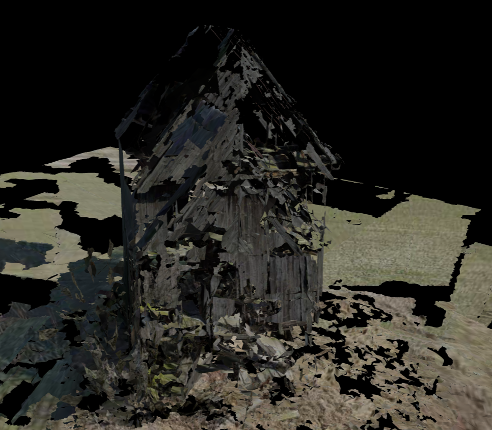
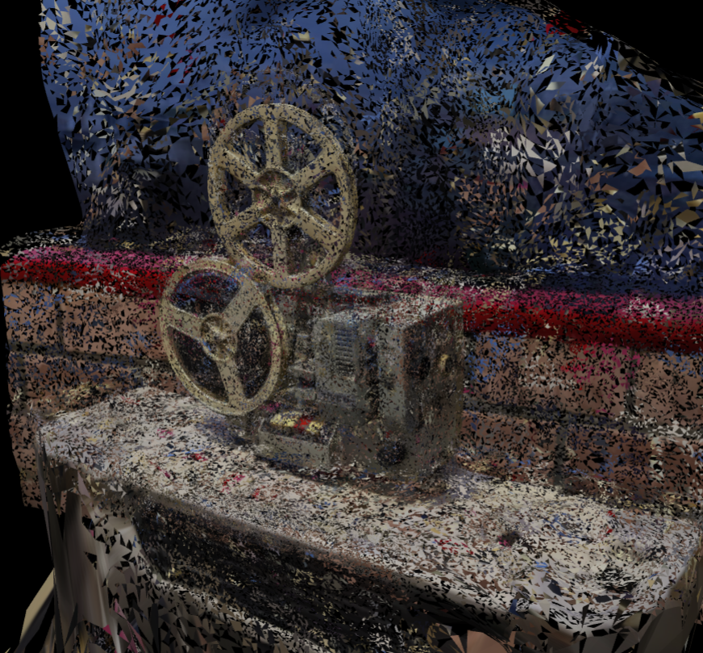
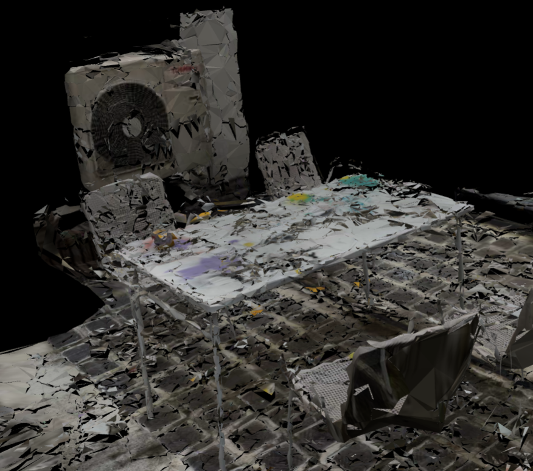
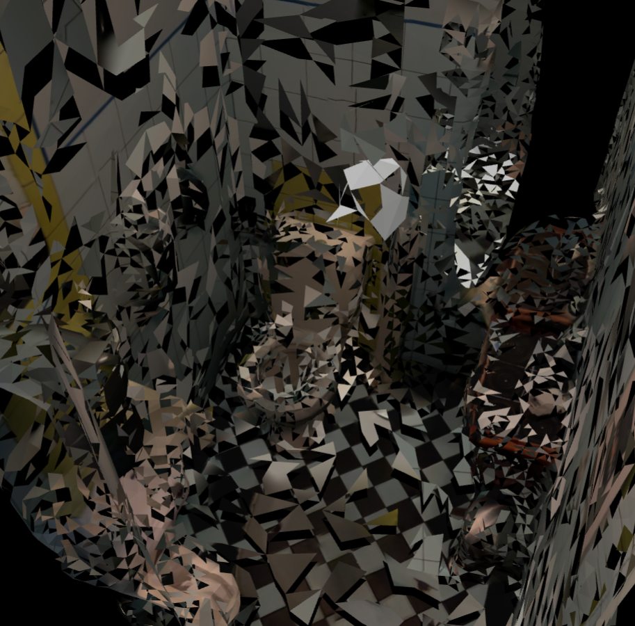
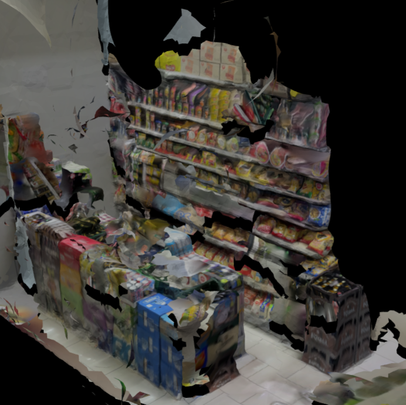
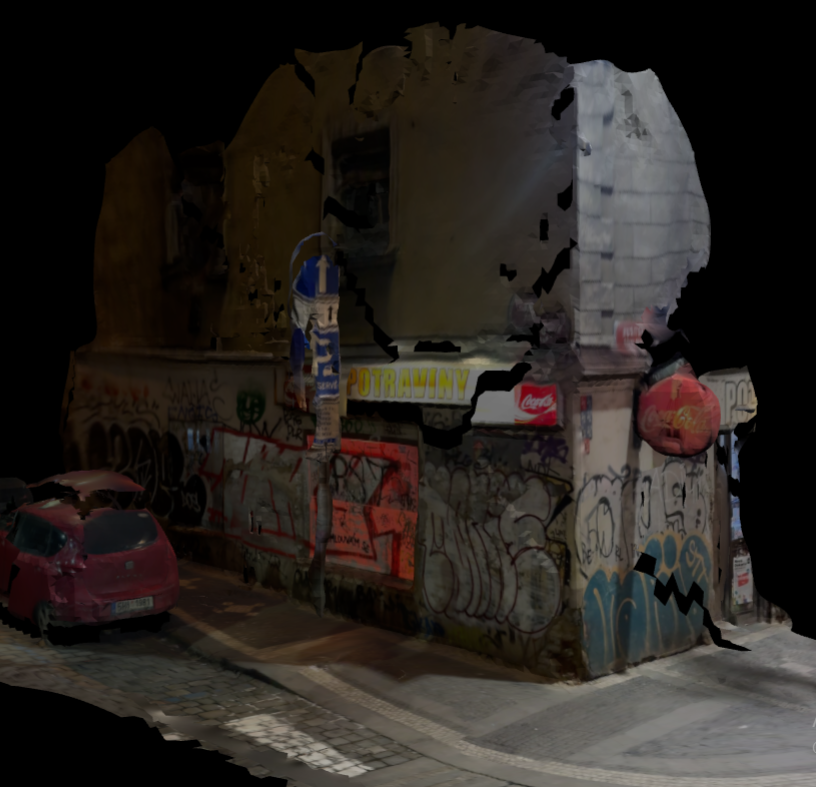
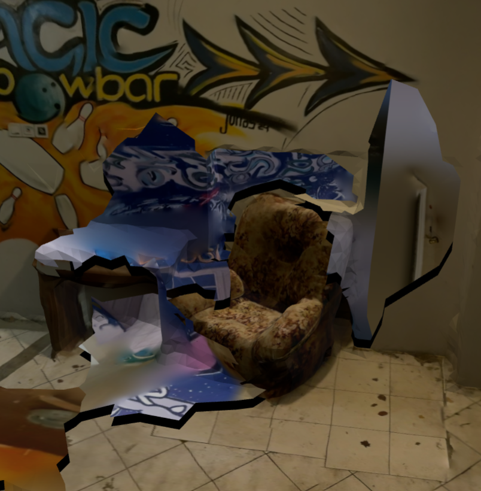
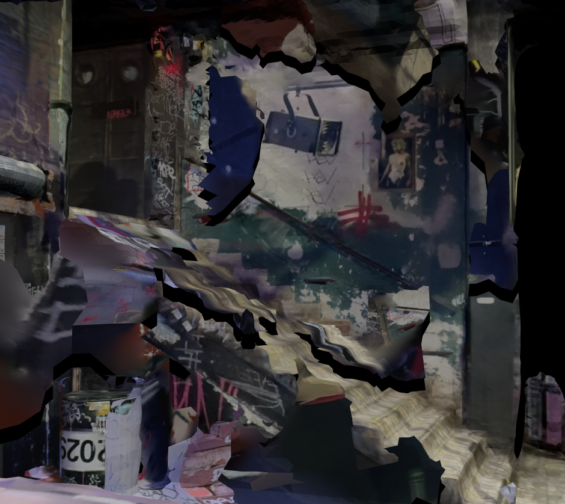

Alternative Archive
2026
Web Archive
Alternative Archive is an experimental approach to digital archiving that explores how digital systems shape the preservation and interpretation of information.
Archives influence how we remember the past. When documenting historical objects, texts, and events, archivists select what is considered important to preserve. Depending on the perspective of the person or institution creating the archive, some information is emphasised, while other details may be distorted, overlooked, or forgotten.
In this project, I create an alternative digital archive using 3D scans as preservation material. Rather than treating digitisation as a neutral process, I explore how the archive can introduce its own forms of data loss, distortion, and transformation. These changes are determined by variables generated by the system, including information related to the device accessing the webpage and the time of access.
More on the concept can be found in the research section..
Software: Blender, Polycam, Three.js
Interaction: Interactive 3D scans controlled by camera movement







